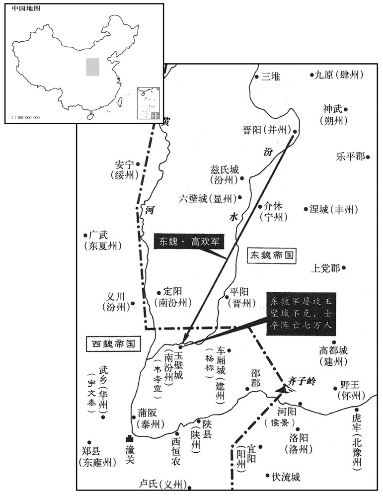

公元546年资治通鉴：本年记事、原文与白话对照
按原书编年位置阅读；追叙和史论不等于本年发生的事件。白话采用所据译本，缺译不以生成译文补齐。
卷159 · 本年记事
公元546年 · 梁高祖武皇帝中大同元年
中大同元年〔（丙寅、五四六）是年夏四月，方改元为中大同〕
上传原文的注释括号有异常，字符原样保留；无法可靠划分的段落默认全文显示。
本年事件索引（现代整理）
- 杨瞟攻克嘉宁，李贲逃入獠地
- 西魏任史宁为凉州刺史讨叛
- 梁朝大赦
- 梁武帝幸同泰寺讲经并改元
- 史宁与独孤信攻克凉州擒宇文仲和
- 张保设计让令狐整出兵
- 令狐整反击张保夺取瓜州
- 众推令狐整任瓜州刺史
- 东魏任侯景为河南大将军大行台
- 东魏遣元廓出使梁朝
- 梁诏非大逆罪不连坐父母祖父母
- 梁朝整顿钱币并推行足陌钱
- 梁武帝年老诸王拥兵争权
- 高欢入邺，迁洛阳石经至邺
- 王思政调荆州，东魏高欢围玉壁
- 陈霸先乘水涨击败李贲
- 梁任萧詧为雍州刺史
- 高欢昼夜猛攻玉壁，韦孝宽坚守
- 侯景进兵齐子岭退回河阳
- 西魏任韦孝宽为骠骑大将军
- 高欢因玉壁无功请求解职
- 高欢撤围后听闻谣言强作镇定
- 苏绰积劳病卒，宇文泰痛惜
- 侯景自负多谋，获高欢重用
- 侯景轻视高澄，拥兵自固
- 高欢临终嘱咐高澄防备侯景
春，正月，癸丑，杨瞟等克嘉宁城，〔瞟，匹妙翻。考异曰：典略作「乙未」。今从梁帝纪。〕李贲奔新昌獠中，诸军顿于江口。〔江口，即苏历江入海之口。獠，鲁皓翻。〕
春季，正月，癸丑（初十），杨等人攻克了嘉宁城，李贲逃奔新昌的獠人地区，各路人马便停留在江口。
二月，魏以义州刺史史宁〔先是东、西魏争义州，史宁先入城据之，西魏因以为刺史。〕为凉州刺史；前刺史宇文仲和据州，不受代，瓜州民张保杀刺史成庆以应之，晋昌民吕兴杀太守郭肆，以郡应保。〔刘昫唐志：瓜州晋昌县，汉敦煌郡之寘安县，旧置晋昌郡及寘安县，因改晋昌为永兴；隋改为瓜州，改寘安为常乐；武德七年，复为晋昌。唐又有常乐县，则汉之广至县地也。又按五代志，瓜州常乐县，后魏置常乐郡，后周并凉兴、广至、寘安、闰泉合为凉兴县；隋废郡，改县为常乐。参而考之，则晋昌郡当置于隋常乐县界。〕丞相泰遣太子太保独狐信、开府仪同三司怡峰与史宁讨之。
二月，西魏任命义州刺史史宁为凉州刺史，前任刺史宇文仲和依然占据着凉州，不接受新刺史的取代。瓜州人张保也杀掉了瓜州刺史成庆来与宇文仲和呼应。晋昌郡人吕兴杀掉了太守郭肆，以此来响应张保。丞相宇文泰派遣太子太保独孤信、开府仪同三司怡峰和史宁一同讨伐叛逆。
三月，乙巳，大赦。
三月，乙己（初三），梁朝大赦天下。
庚戌，上幸同泰寺，遂停寺省，〔同泰寺有便省。〕讲三慧经。〔考异曰：典略云：癸卯，诏「以今月八日于同泰寺设无遮大会，舍朕身及以宫人并所王境土供养三宝。」四月，丙戌，公卿以钱二亿万奉赎。按韩愈佛骨表云，「三度舍身为寺家奴，」若并此则四矣。今从梁书。〕夏，四月，丙戌，解讲，大赦，改元。是夜，同泰寺浮图灾，上曰：「此魔也，宜广为法事。」群臣皆称善。乃下诏曰：「道高魔盛，行善鄣生，〔魔，鬼魔。鄣，鄣碍。魔，眉波翻。行，下孟翻。〕当穷兹土木，倍增往日。」遂起十二层浮图；将成，值侯景乱而止。
庚戌（初八），梁武帝临幸同泰寺，就住在寺里的临时官署中，讲读《三慧经》。夏季，四月，丙戌（十四日），梁武帝讲经结束，实行大赦，改换年号。这天夜里，同泰寺的塔起火，梁武帝说：“这是魔鬼造成的，应该大规模地做一些佛事活动。”文武大臣们都说好。于是，梁武帝下诏说：“道高魔盛，行善发生障碍，应该大兴土木，建造规模要超过以往。”于是便开始起造一座高十二层的佛塔；将要建成之时，正赶上侯景叛乱，便中止修建了。
魏史宁晓谕凉州吏民，率皆归附，独宇文仲和据城不下。五月，独孤信使诸将夜攻其东北，自帅壮士袭其西南，迟明，克之，〔将，即亮翻。帅，读曰率；下同。迟，直二翻。〕遂擒仲和。
西魏史宁慰问安抚凉州的百姓和官吏，全州吏民都归顺了他，唯有宇文仲和占据着凉州城不肯投降。五月，独孤信派遣将领们在夜晚攻打城的东北角，自己统率壮士袭击城的西南角，黎明时分，攻克了凉州城。擒获了宇文仲和。
初，张保欲杀州主簿令狐整，以其人望，恐失众心，虽外相敬，内甚忌之。整阳为亲附，因使人说保曰：「今东军渐逼凉州，〔东军，谓独孤信之军东自长安来。说，式芮翻。〕彼劫孤危，恐不能敌，宜急分精锐以救之。然成败在于将领，〔将，即亮翻；下同。〕令狐延保，兼资文武，〔令狐整，字延保。〕使将兵以往，蔑不济矣！」保从之。
当初，张保想要杀掉瓜州主簿令狐整，因令狐整很有声望，杀掉他会失去民心，所以张保尽管表面上尊敬令狐整，但在内心却非常忌恨他。令狐整假装亲近，依附于张保，便派人劝张保说：“现在独孤信的军队正在渐渐逼近凉州，凉州的形势孤立无援，十分危险，恐怕不能抵挡住独孤信的军队。应该赶快分派一些精锐部队援救凉州。但是，成功或失败的关键在于将领的能力。令狐整是个文武兼备的人才，如果派他率领军队前往凉州，没有不成的事。”张保采纳了令狐整的建议。
整行及玉门，〔玉门县，汉、晋属酒泉郡。师古曰：阚骃云：汉罢玉门关屯，徙其人于此。五代志：瓜州玉门县，后魏置会稽郡，又有玉门郡。〕召豪杰保罪状，驰还袭之。先克晋昌，斩吕兴；进击瓜州，州人素信服整，皆弃保来降。保奔吐谷浑。〔降，户江翻。吐，从暾入声。谷，音浴。〕
令狐整带领军队行军到了玉门，他召集起英雄豪杰，历数张保的罪状，带领骑兵返回瓜州袭击张保。他先攻克了晋昌，斩除了吕兴。然后攻打瓜州，当地人平素都信服令狐整，因此都叛离张保，向令狐整投降。张保逃往吐谷浑。
众议推整为刺史，整曰：「吾属以张保逆乱，恐阖州之人俱陷不义，故相与讨诛之；今复见推，是效尤也。」〔左传曰：尤而效之，罪又甚焉。复，扶又翻。〕乃推魏所遣使波斯者张道义行州事，〔使，疏吏翻。〕具以状闻。丞相泰以申徽为瓜州刺史。召整寿昌太守，〔五代志：西城郡石泉县，旧曰永乐，置晋昌郡，西魏改为寿昌郡，又改永乐为石泉。守，式又翻。〕封襄武男。整帅宗族乡里三千余人入朝，从泰征讨，累迁骠骑大将军、开府仪同三司，加侍中。〔令狐整以忠顺贵显于魏，史终言之。朝，直遥翻。骠，匹妙翻。骑，奇寄翻。〕
大家商议后，一致推举令狐整担任瓜州刺史。令狐整对大家说：“我们因崐为张保叛逆作战，恐怕使全瓜州人都陷入了不义的境地，所以才共同讨伐他。今天我又被大家推举为瓜州刺史，这是明知错误而加以仿效，会罪上加罪啊。”于是，他便推举西魏派来出使波斯的张道义暂且主持瓜州的日常事务，并将情况上报朝廷。西魏丞相宇文泰让申徽担任瓜州刺史，召令狐整担任寿昌太守，加封为襄武男。令狐整率领他的宗族、同乡共三千多人进京入朝，跟随宇文泰征讨叛逆，他逐步升官为骠骑大将军、开府仪同三司，又加官侍中。
六月，庚子，东魏以司徒景为河南大将军、大行台。
六月，庚子（二十九日），东魏任命司徒侯景为河南大将军和大行台。
秋，七月，壬寅，东魏遣散骑常侍元廓来聘。〔散，悉亶翻。〕
秋季，七月，壬寅（初一），东魏派散骑常侍元廓来到梁朝聘问。
甲子，诏：「犯罪非大逆，父母、祖父母不坐。」
甲子（二十三日），梁武帝颁布诏书：“罪犯如果不犯有大逆不道的罪行，他的父母以及祖父母不被连坐。”
先是，江东唯建康及三吴、荆、郢、江、湘、梁、益用钱，〔先，悉荐翻。〕其余州郡杂以谷帛，交、广专以金银为货。上自铸五铢及女钱，二品并行，〔杜佑曰：梁武帝铸钱，肉好周郭，文曰五铢，重二铢三絫二黍，其百文则重一斤二两。又别铸除其肉郭，谓之公式女钱，径一寸，文曰五铢，重如新铸五铢。二钱并行。及其末也，又有两柱钱。〕禁诸古钱。普通中，更铸铁钱。由是民私铸者多，物价腾踊，交易者至以车载钱，不复计数。〔更，工衡翻。复，扶又翻。〕又自破岭以东，八十为百，名曰「东钱」；〔破岭，在今镇江府丹杨县，秦始皇所凿，即破冈也。〕江、郢以上，七十为百，名曰「西钱」；建康以九十为百，名曰「长钱」。丙寅，诏曰：「朝四暮三，众狙皆喜，名实未亏而喜怒为用。〔庄子曰：狙公赋芋，曰朝三而暮四，众狙皆怒；曰朝四而暮三，众狙皆喜。狙，千余翻。〕顷闻外间多用九陌钱，陌减则物贵，陌足则物贱，非物有贵贱，乃心有颠倒。至于远方，日更滋甚，徒乱王制，无益民财。自今可通用足陌钱！令书行后，百日为期，若犹有犯，男子谪运，女子质作，并同三年。」〔谪运者，以谪发之转运；质作，质其身使居作；皆役之三年。此古所谓三岁刑也。〕诏下而人不从，钱陌益少；〔少，诗沼翻。〕至于季年，遂以三十五为百云。
在此以前，长江之南只有建康及三吴、荆州、郢州、江州、湘州、梁州、益州等地使用货币。其他的州和郡杂用谷物或帛等实物交换。交、广两地专门使用金银作为货币。梁武帝自己铸造了五铢钱和女钱，让这两种货币一起在市场流通，并且禁止使用各种古代货币。普通年间，又铸造了铁钱。从此民间私下里铸造货币的人很多，造成物价沸腾猛涨。做买卖的人竟至于用车来拉钱，而不再逐个算计。还有，从破岭往东，每八十文折合一百文，人们称它为“东钱”。江州、郢州以西每七十文折合一百文，被称为“西钱”。建康地区每九十文折合一百文，被称为“长钱”。丙寅（二十五日），梁武帝颁布诏书说：“朝四暮三，众猴便都高兴，名称不同而实际意思一样，但喜怒却不同。近来我听说外界大多用九陌钱，这样钱减少了，那么物价就会昂贵，钱充足了，物价就会低贱。并不是东西本身有贵有贱，而是人们的思想颠来倒去。说到边远地区，那里货币混乱的状况更是一天比一天厉害。这只能扰乱国家的制度，不会使百姓的财富增多。从今以后，应该在全国通用足陌钱。颁布命令的文书发出以后，以一百天为期限，在百日之外如果还有人违犯这一制度，就要服三年劳役。男子被罚到边远地区搬运东西，女子要以身抵押服劳役。”诏书颁布下去之后，百姓却不按这种制度去做。钱陌变得更少了。到了末年竟以三十五文算做一百文了。
上年高，诸子心不相下，〔下，遐嫁翻。〕〔【章：十二行本「下」下有「互相猜忌」四字；乙十一行本同；孔本同；退斋校同。】〕邵陵王纶为丹杨尹，湖东王绎在江州，武陵王纪在益州，皆权侔人主；太子纲恶之，常选精兵以卫东宫。〔为帝诸子皆不终张本。恶，乌路翻。〕八月，以纶为南徐州刺史。
梁武帝年事已高，他的儿子们彼此互不相服，邵陵王萧纶任丹杨尹，湘东王萧绎任江州刺史，武陵王萧纪任益州刺史，他们的权力都跟皇帝一般；太子萧纲很忌恨他们，常常挑选一些精锐军队来保卫东宫。八月，梁武帝任命萧纶担任南徐州刺史。
东魏丞相欢如邺。〔自晋阳朝于邺而书「如邺」，言其威权陵上，若列国然。〕高澄迁洛阳石经五十二碑于邺。〔石经见五十七卷汉灵帝熹平四年。〕
东魏丞相高欢前往邺城。他的儿子高澄将洛阳五十二块刻有《石经》的石碑迁到了邺城。
魏徙并州刺史王思政为荆州刺史，使之举诸将可代镇玉壁者。〔西魏置并州刺史，侨治玉壁。将，即亮翻。〕思政举晋州刺史韦孝宽，〔晋州属东魏，韦孝宽遥领刺史耳。〕丞相泰从之。东魏丞相欢悉举山东之众，将伐魏；癸巳，自邺会兵于晋阳；九月，至玉壁，围之。以挑西师，〔挑，徒了翻。〕西师不出。
西魏调并州刺史王思政担任荆州刺史，并让他从诸将中推举一位可以代替自己镇守并州州治玉壁的将领。王思政推举了晋州刺史韦孝宽，丞相宇文泰采纳了他的意见。东魏丞相高欢率领崤山以东的全部兵马将要讨伐西魏。崐癸巳（二十三日），高欢便带兵从邺城出发，到晋阳与其他将领会师。九月，到达了玉壁，将玉壁包围起来。他们向西魏的军队挑战，西魏的军队却不出来应战。
李贲复帅众二万自獠中出，屯典澈湖，〔复，扶又翻。湖亦当在新昌郡界。考异曰：典略云：「渡武平江，据新安村。」今从陈帝纪。〕大造船舰，充塞湖中。〔舰，户黯翻。塞，悉则翻。〕众军惮之，顿湖口，不敢进。陈霸先谓诸将曰：「我师已老，〔杨瞟等自去年夏五月出师，至是几一年半，故自谓师老。〕将士疲劳；且孤军无援，入人心腹，若一战不捷，岂望生全！今藉其屡奔，人情未固，夷、獠乌合，易为摧殄。〔獠，鲁皓翻；下同。易，弋豉翻。〕正当共出百死，决力取之；无故停留，时事去矣！」诸将皆默然莫应。〔诸将心不欲战，故默而莫敢应。〕是夜，江水暴起七丈，注湖中。霸先勒所部兵乘流先进，众军鼓噪俱前；贲众大溃，窜入屈獠洞中。
李贲又率领两万人马从獠人居住区出发，把军队屯集在典澈湖一带。他在那里建造了大量战船，充满了整个典澈湖。进攻李贲的各路军队都害怕他的战船，便停在了典澈湖口，不敢进入湖内。陈霸先对将领们说：“我军出征时间已经很长了，将士们疲惫不堪，况且我孤军无援，进入敌人的心脏地区，如果第一战打不胜的话，怎能指望活着回来！现在我们应该趁着他多次失利，人心没有稳定，而夷、獠都是些乌合之众，很容易被摧毁消灭，正应当共同出生入死，竭尽全力打败李贲。如果无缘无故地停留在湖口，机会就要失去了！”将领们听完陈霸先的话，都默默无语，没有响应。这天夜里，江水暴涨了七丈高，流到了典澈湖中。陈霸先率领他的军队顺流先进入湖中，众多人马在鼓声中一起呐喊冲杀。李贲的军队被打得惨败，逃进了屈獠洞里。
冬，十月，乙亥，以前东扬州刺史岳阳王詧为雍州刺史。〔雍，于用翻。〕上舍詧兄弟而立太子纲，〔事见一百五十五卷中大通三年。〕内尝愧之，宠亚诸子。〔言詧被宠，亚于诸子。帝固知詧之才器足以自立矣。〔以会稽人物殷阜，〔会，工外翻。〕故用詧兄弟迭为东扬州以慰其心。詧兄弟亦内怀不平。詧以上衰老，朝多秕政，〔朝，直遥翻。秕，卑履翻，不成粟也。书曰：若粟之有秕。后汉书安帝赞曰：秕我王度。注曰：秕，谕秽也。〕遂蓄聚货财，折节下士，〔折，而设翻。下，遐嫁翻。〕招募勇敢，左右至数千人。以襄阳形胜之地，梁业所基，〔谓帝自襄阳起兵以得天下。〕遇乱可以图大功。乃克己为政，抚循士民，数施恩惠，延纳规谏，所部称治。〔为詧据襄阳张本。数，所角翻。治，直吏翻。〕
冬季，十月，己亥（初六），梁朝任命前东扬州刺史岳阳王萧为雍州刺史。梁武帝没有选择萧他们几个兄弟，而立太子萧纲作为接班人，他在内心里觉得愧对萧，他对萧的宠爱仅次于对他的其他几个儿子。由于会稽这一地区人口稠密，物产丰富，所以梁武帝让萧他们几个兄弟轮流担任东阳州刺史，用此来安抚他们。萧几兄弟在心里也感到忿忿不平。萧认为，皇帝人已经衰老，朝廷的政治中有许多毛病，于是，他便开始储备物资和财产，屈己下人，礼贤下士，在天下招募勇敢善战的人，他身边的人已达到几千人。因为襄阳的地理优势很大，它是梁朝大业的根基，梁武帝就是从襄阳起兵才夺取天下的，所以如果遇到天下大乱，就可以在此图谋大业。于是，萧便严格要求自己，抚慰、顺应百姓与官员们的心理，多次对他们实施恩惠，广泛听取大家的规劝和意见，他所管辖的地区被治理得井井有条。
东魏丞相欢攻玉壁，昼夜不息，魏韦孝宽随机拒之。城中无水，汲于汾，欢使移汾，一夕而毕。〔于汾水上流决而移之，不使近城。〕欢于城南起土山，欲乘之以入。城上先有二楼，〔先，悉荐翻。〕孝宽缚木接之，令常高于土山以御之。欢使告之曰：「虽尔缚楼至天，我当穿地取尔。」乃凿地为十道，又用术士李业兴孤虚法，〔汉书艺文志有风后孤虚二十卷。史记日者传曰：日辰不全，故有孤虚。注云：甲乙谓之日，子丑谓之辰。六甲孤虚法，甲子旬中无戌亥，戌亥即为孤，辰巳即为虚。甲戌旬中无申酉，申酉为孤，寅卯为虚。甲申旬中无午未，午未为孤，子丑为虚。甲午旬中无辰巳，辰巳为孤，戌亥为虚。甲辰旬中无寅卯，寅卯为孤，申酉为虚。甲寅旬中无子丑，子丑为孤，午未为虚。贤曰：对孤为虚。玄女谓黄帝曰：战陈之法，避孤击虚。〕聚攻其北，北，天险也。〔天险，自然之险也；天设地造，不假人力者也。易曰：天险不可升也。〕孝宽掘长堑，邀其地道，选战士屯堑上；每穿至堑，战士辄禽杀之。又于堑外积柴贮火，〔堑，七艳翻。贮，丁吕翻。〕敌有在地道内者，塞柴投火，以皮排扻之，〔塞，悉则翻。排，读与疒同，音步拜翻，韦囊也，所以吹火。〕一鼓皆焦烂。〔鼓排吹之，火气入地道，故敌人在其中者皆焦烂。〕敌以攻车撞城，〔撞，直江翻。〕车之所及，莫不摧毁，无能御者。孝宽缝布为幔，〔幔，莫半翻。〕随其所向张之，布既悬空，车不能坏。〔坏，音怪。〕敌又缚松、麻于竿，〔松薪麻骨之燥者，烧之易然，故敌用之。〕灌油加火以烧布，并欲焚楼。孝宽作长钩，利其刃，〔此所谓钩刀也。杜佑曰：钩竿如枪，两旁有曲刃，可以钩物。〕火竿将至，以钩遥割之，松、麻俱落。敌又于城四面穿地为二十道，其中施梁柱，纵火烧之，柱折，城崩。〔高欢尝用此术攻邺以擒刘诞，故复用之于玉壁。折，而设翻。〕孝宽于崩处竖木栅以扞之，〔竖，而主翻。〕敌不得入城。外尽攻击之术，而城中守御有余。孝宽又夺据其土山。欢无如之何，乃使仓曹参军祖珽说之曰：〔珽，他鼎翻。说，式芮翻。〕「君独守孤城而西方无救，恐终不能全，何不降也﹖」〔降，户江翻；下同。〕孝宽报曰：「我城池严固，兵食有余。攻者自劳，守者常逸，岂有旬朔之间，已须救援！〔浃日为旬，改月为朔。〕适忧尔众有不返之危。孝宽关西男子，必不为降将军也！」〔自谓男子，言决不怯懦如妇人。〕珽复谓城中人曰：「韦城主受彼荣禄，或复可尔；〔可尔，犹言可如此也。复，扶又翻。〕自外军民，何事相随入汤火中！」乃射募洛于城中，〔募格者，立赏格以募人。射，而亦翻；下同。〕云：「能斩城主降者，拜太尉，封开国郡公，赏帛万匹。」孝宽手题书背，返射城外云：「能斩高欢者准此。」珽，莹之子也。〔祖莹见一百五十卷普通六年。〕东魏苦攻凡五十日，士卒战及病死者共七万人，〔考异曰：北史韦孝宽传云：「苦战六旬，伤及病死者什四五。」今从北齐书。〕共为一家。欢智力皆困，因而发疾。有星坠欢营中，士卒惊惧。十一月，庚子，解围去。
东魏丞相高欢的军队日夜不停地进攻玉壁，西魏的韦孝宽随机应变崐地抵抗东魏的进攻。玉壁城中没有水源，城中的人要从汾河汲水，高欢于是派人在汾河上游把水决开，使汾河水远离玉壁城，他们在一个晚上便完成了这一移汾工程。高欢在玉壁城的南面堆起了一座土山，想利用这座土山攻进城里。玉壁城上原来就有两座城楼，韦孝宽让人把木头绑在楼上接高，让它的高度常常高于东魏堆的土山，以抵御东魏的进攻。高欢见到这种情况，便派人告诉韦孝宽说：“即使你把木头绑在楼上，使楼高到天上，我还会凿地洞攻克你。”于是，高欢便派人掘地，挖了十条地道，又采用术士李业兴的“孤虚法”，调集人马，一齐进攻玉壁城北面。城的北面，是山高谷深的非常险要的地方。韦孝宽叫人挖了一条长长的大沟，以此长沟来阻截高欢挖的地道。他挑选了精兵良将驻守在大沟上面，每当有敌人穿过地道来到大沟里，战士们便都能把他们抓住或杀掉。韦孝宽又叫人在沟的外面堆积了许多木柴，贮备了一些火种，一旦地道里有敌人，便把柴草塞入地道，把火种投掷进去，并用皮排吹火。一经鼓风吹火，地道里的敌人全部被烧得焦头烂额。敌人又用一种坚固的攻城战车撞击城墙。战车所到之处，没有不被摧毁撞坏的，西魏没有一种武器可以抵挡它。韦孝宽便把布匹缝制成一条很大的幔帐，顺着攻车撞城的方向张开它，因为布是悬在空中的，攻车无法撞坏它。敌军又把松枝和麻干之类的易燃物品绑在车前的一根长竿上，又在其中灌油，点起火，用来烧毁韦孝宽的幔帐，并且还想烧毁城楼。韦孝宽便让人制造了一种很长的钩，并把它的刀刃磨得很锋利，等火竿快要到时，用长钩远远地切断它，附着在火竿上的松枝和麻干便都纷纷坠落。敌人又在玉壁城墙下四面八方挖了二十条地道，并在地道中用木柱支撑地上的城墙，然后放火烧掉这些木柱。于是城墙坍塌了。韦孝宽在城墙坍塌的地方坚起一些木栅栏来保卫玉壁城，敌人无法攻进城去。在城外，东魏攻打玉壁城的方法已经用尽，而在城内，韦孝宽抵御敌人的办法还绰绰有余。他又从高欢手里夺占了那座堆起的土山。高欢不知道怎么办好，就派仓曹参军祖劝说韦孝宽：“您独自一个人守卫这座孤城，西面又没有救兵，恐怕最终也不能保全它。为什么不投降呢？”韦孝宽回答他说：“我的城池坚固无比，士兵和粮食都富富有余，进攻的人是白白辛苦，而守城的人却以逸待劳，哪有一个月之内就已需别人援助的。我倒是担心你们这么多人有回不去的危险。我韦孝宽是个关西男子汉，一定不会做投降的将军的！”祖又对城里的人说：“韦孝宽享受着西魏的荣华富贵和功名利禄，倒还可以这样做，但其余的士兵和百姓，为什么还要跟他一起赴汤蹈火呢？”于是，便向城里射去赏悬捉拿韦孝宽所定的报酬数额，上面写道：“凡是能斩杀韦孝宽而投降的人，就拜他为太尉，并且加封他为开国郡公，赏赐万匹绢帛。”韦孝宽便在它的背面提笔写字射回城外，上写：“能杀掉高欢的人，也能得到同样奖赏。”祖是祖莹的儿子。东魏的军队对玉壁城苦苦攻打了五十天，战死以及病死的士兵总共达到七万人，全都埋在一个大坟墓里。高欢的智谋用尽了，也未攻下玉壁城，又气又急，因此得了疾病。这时，有颗流星坠落在高欢的军营中，东魏的士兵们都很惊怕。十一月，庚子（初一），东魏军队解除了围攻，离开了这里。

先是欢别使侯景将兵趣齐子岭，〔河内郡王屋县，旧名长平，有齐子岭，有轵关。杜佑曰：按齐子岭在今王屋县东二十里，周、齐分界处。先，悉荐翻。将，即亮翻。趣，七喻翻。〕魏建州刺史杨檦镇车厢，恐其寇邵郡，〔先是，檦取建州，已而退还邵郡，西魏因授以建州刺史。车厢当在隋、唐之绛州垣县界。宋白曰：绛州绛县，本理车厢城，隋移县理于城北十里，檦，与标同。〕帅骑御久之。〔帅，读曰率。骑，奇寄翻。〕景闻檦至，斫木断路六十余里，〔断，音短。〕犹惊而不安，遂还河阳。〔杨檦常才耳，侯景何至惧之如此！史之所言容有过其实者。〕
原先，高欢曾另外派遣侯景率领军队进兵齐子岭。西魏建州刺史扬正在镇守车厢这个地方。他听到东魏向齐子岭进军的消息之后，害怕东魏侵犯邵郡，就率领骑兵前去抵御东魏军队。侯景听说杨来到，就让人砍了许多树木堆在路上，阻断了六十多里道路，仍惴惴不安，于是便回到了河阳。
魏以韦孝宽为骠骑大将军、开府仪同三司，进爵建忠公。〔赏守玉壁之功也。建忠公，建忠郡公。五代志：京兆郡三原县，后周置建忠郡。〕时人以王思政为知人。
西魏任命韦孝宽为骠骑大将军，开府仪同三司，并晋升爵位为建忠公。当时人们都认为王思政很能识人。
十一〔【章：乙十一行本「一」作「二」；张校同。】〕月，己卯，欢以无功，表解都督中外诸军，东魏主许之。
十一月，己卯（疑误），高欢认为此次出征没有取得战绩，就上书要求解除都督中外诸军的职务，东魏孝静帝同意了他的请求。
欢之自玉壁归也，军中讹言韦孝宽以定功弩射杀丞相；〔射，而亦翻。〕魏人闻之，因下令曰：「劲弩一发，凶身自陨。」欢闻之，勉坐见诸贵，使斛律金作敕勒歌，〔斛律金，敕勒部人心，故使作敕勒歌。洪迈曰：斛律金唱敕律歌，本鲜卑语。按古乐府有其辞云：「敕勒川，阴山下，天似穹庐，笼罩四野。天苍苍，野茫茫，风吹草低见牛羊。」余谓此后人妄为之耳。敕勒与鲜卑殊种，斛律金出于敕勒，故使之作敕勒歌，若高欢则习鲜卑之俗者也。〕欢自和之，哀感流弟。〔和，胡卧翻。史言高欢将死，故当乐而哀，不能自揜。〕
高欢从玉壁回到东魏之后，他的军中传言说韦孝宽用定功弩射杀了丞相高欢。西魏的人听到这一传言后，便颁布命令说：“强劲的弩一射，元凶自己就死了。”高欢听到了这些话，勉强坐起来召见权贵们，他让斛律金作了一首《敕勒歌》，高欢自己也跟着乐曲和唱，悲哀之感油然而生，不禁痛哭流涕。
魏大行台度支尚书、司农卿苏绰，性忠俭，常以丧乱未平为己仕任，〔度，徒洛翻。丧，息浪翻。〕纪〔【章：十二行本「纪」上有「荐贤拔能」四字；乙十一行本同；孔本同；张校同。】〕纲庶政；丞相泰推心任之，人莫能间。〔间，古苋翻。〕或出游，常预署空纸以授绰；有须处分，〔处，昌吕翻。分，扶问翻。〕随事施行，及还，启知而已。绰常谓「为国之道，当爱人如慈父，训人如严师。」每与公卿论议，自昼达夜，事无巨细，若指诸掌，积劳成疾而卒。〔卒，子恤翻。〕泰深痛惜之，谓公卿曰：「苏尚书平生廉让，吾欲全其素志，恐悠悠之徒有所未达；如厚加赠谥，又乖宿昔相知之心；何为而可﹖」尚书令史麻瑶〔尚书令史，自东汉有之。唐六典曰：魏、晋以来，令史之任，用人常轻，齐、梁、后魏、北齐，虽预品秩，益又微矣。〕越次进曰：「俭约，所以其美也。」泰从之。归葬武功，〔苏绰，武功人，归葬乡里。〕载以布车一乘，〔乘，绳证翻。〕泰与群公步送出同州郭外。〔五代志：冯翊郡，后魏置华州，西魏改曰同州。孙愐曰：冯翊有九龙泉，泉有九源，同为一流，因以名州。〕泰于车后酹酒，〔酹，卢对翻，餟祭以酒沃地也。〕言曰：「尚书平生为事，妻子、兄弟所不知者，吾皆知之。唯尔知吾心，吾知尔志，方与共定天下，遽舍吾去，柰何！」因举声恸哭，不觉飜落于手。
西魏大行台度支尚书、司农卿苏绰，秉性忠厚俭朴。他常常把消除人民的死丧祸乱当做是自己的责任，每天处理许多国家大事。丞相宇文泰对他推心置腹，非常信任，没有人能离间他们的关系。有时宇文泰外出，常常预先把一些签上名的空白纸交给苏绰。如果有必须要安排的事，可以根据情况加以处理，等宇文泰回来之后，苏绰告知宇文泰就行了。苏绰常常说：“治国之道，应该象慈父爱护孩子一样爱护百姓，要象严师训导学生一样训导百姓。”他经常与王公大臣们商议国家政务，从白天谈到夜晚，无论国事是大是小，他都了如指掌。最后积劳成疾而死。宇文泰对他的死深感悲痛和惋惜。他对王公大臣们说：“苏尚书一生廉洁谦让。我想按照他平素的志向办理他的后事，只怕众多吏民不理解我的用意。如果对他厚加追赠，又违背了我们以往的相知之心。该怎么办才好呢？”尚书令史麻瑶越次序先进言说：“节俭办理他的后事，便是表彰苏尚书美德的最好办法。”宇文泰采纳了麻瑶的意见。用一辆白色丧车载着苏绰的遗体，送回老家武功安葬，宇文泰和大臣们步行护送灵车走出同州城外。宇文泰在灵车后面把酒洒向大地，他悲恸地说：“尚书一生做的事，你的妻儿、兄弟不知道的，我都知道。这世上只有你最了解我的心意，也只有我了解你的志向，我正要与你一同平定天下，你却这么快就离开我而去，这如何是好！”于是便放声痛哭起来，不知不觉中，酒杯从手上滑落到地上。
东魏司徒、河南大将军、大行台侯景，右足偏短，弓马非其长，而多谋算。诸将高敖曹、彭乐等皆勇冠一时，〔冠，古玩翻。〕景常轻之，曰：「此属皆如豕突，势何所至！」〔言其勇而无谋也。〕景尝言于丞相欢：「愿得兵三万，横行天下，要须济江缚取萧衍老公，以为太平寺主。」〔史言侯景夙有取江南之志。太平寺盖在邺。〕欢使将兵十万，专制河南，杖任若己之半体。〔杖，直两翻，凭也。〕
东魏司徒、河南大将军、大行台侯景，右脚比左脚短，所以，骑马射箭对他来说并不擅长，但是他足智多谋。高敖曹、彭乐等将领都是当时最勇猛的，侯景常常很轻视他们，对人说：“这些人就象受惊的猪一样横冲直撞，流窜侵扰，能撞到哪里去呢！”侯景曾对丞相高欢说：“我愿意率领三万人马，横扫天下，应当渡过长江把萧衍那老头子绑来，让他做太平寺的寺主。”高欢派他带领十万兵马，全权管理黄河以南地区，对他的依靠、任用，就好象他是自己的半个身体一样。
景素轻高澄，尝谓司马子如曰：「高王在，吾不敢有异；王没，吾不能与鲜卑小儿共事！」子如掩其口。及欢疾笃，澄诈为欢书以召景。先是，景与欢约曰：「今握兵在远，人易为诈，〔先，悉荐翻。易，弋豉翻。〕所赐书皆请加微点。」欢从之。景得书无点，辞不至；又闻欢疾荐，用其行台郎颍川王伟计，遂拥兵自固。
侯景一贯轻视高澄，他曾对司马子如说：“高王在世的时候，我不敢存有异心。如果高王去世了，我不能与那个鲜卑小子共事！”司马子如赶快捂住了侯景的嘴。到了高欢已病入膏肓的时候，高澄便假借高欢的名义写了一封书信召侯景前来。以前，侯景曾与高欢有过约定，他对高欢说：“现在我在远处掌握着军队，人们很容易从中搞鬼。以后凡是您赐给我的书信都请您加一个小黑点。”高欢同意了侯景的要求。现在，侯景拿到了高欢的书信后，信上却没有黑点，便推托没有去。后来他又听说高欢的病情已经很严重了，就采纳了他的行崐台郎颍川人王伟的计谋，聚集军队，巩固自己的势力。
欢谓澄曰：「我虽病，汝面更有余忧，何也﹖」〔言澄当以得尽总内外大权为喜，不应更有余忧。〕澄去及对，欢曰：「岂非忧侯景叛邪﹖」对曰：「然。」欢曰：「景专制河南，十四年矣，〔东魏天平元年，欢使景取荆州，后遂委以河南，至是十三年。欢此语当在来春垂没之时。〕常有飞扬跋扈之志，顾我能畜养，〔畜，许竹翻。〕非汝所能驾御也。今四方未定，勿遽发哀。库狄干鲜卑老公，斛律金敕勒老公，并性遒直，终不负汝。〔遒，慈秋翻，健也，固也。〕可朱浑道元、刘丰生，远来投我，必无异心。〔可朱浑道元奔东魏见一百五十七卷大同元年。刘丰生奔东魏见二年。〕潘相乐本作道人，心和厚，汝兄弟当得其力。韩轨少戆，宜宽借之。〔少，诗沼翻。戆，陟降翻。〕彭乐心腹难得，宜防护之。〔终以邙山事衔之，为后彭乐被诛张本。〕堪敌侯景者，唯有慕容绍宗，我故不贵之，留以遗汝。」〔使澄厚以官爵，结绍宗之心。遗，于季翻；下患遗同。〕又曰：「段孝先忠高仁厚，〔段韶，字孝先。〕智勇兼备，亲戚之中，唯有此子，军旅大事，宜共筹之。」又曰：「邙山之战，吾不用陈元康之言，〔事见上卷大同九年。〕留患遗汝，死不瞑目。」〔瞑，莫定翻。〕相乐，广宁人也。
高欢问高澄：“虽然是我病了，可你的脸上却有另外的忧虑，这是为什么？”没等到高澄回答，高欢又说：“莫不是担心侯景要反叛？”高澄回答说：“是的。”高欢又说：“侯景专制河南已有十四年了，他一直飞扬跋扈，有夺取天下的志向。只有我能驾御他，你很难驾御他。现在，天下还没有安定，如果我死了，你不要马上发丧。库狄干这位鲜卑老人，斛律金这位敕勒老人，他们俩都是性格耿直、强劲有力的人，终不会对你负心的。可朱浑道元、刘丰生他们俩远道前来投奔我，也一定没有背离我们的心意。潘相乐原来是个道人，心地和善厚道，你们兄弟几个人会得到他的帮助的。韩轨有点耿直愚鲁，你们应宽容待他。彭乐的内心很难推测，应该提防他。所有人中，能够与侯景对抗的，只有慕容绍宗一人。我故意不让他得到富贵，就是要把他留下给你。”高欢接着又说：“段孝先这个人忠实、正直、坦白、仁慈、厚道，既有勇又有谋，在所有内外亲属中，只有这个人，军机大事要和他一起商量。”高欢又说道：“邙山战役时，我没有采纳陈元康的忠告，给你留下了隐患，我死不瞑目。”潘相乐是广宁人。
译本中未与胡注本可靠对应的内容
以下另列供核对版本差异，不并入胡注本正文。
译本所附古文
庚戌，欢使段韶从太原公洋镇邺。辛亥，征世子澄会晋阳。
译本白话
庚戌（十一日），东魏丞相高欢派遣段韶跟从太原公高洋镇守邺城。辛亥（十二日），高欢召长子高澄到晋阳相会。